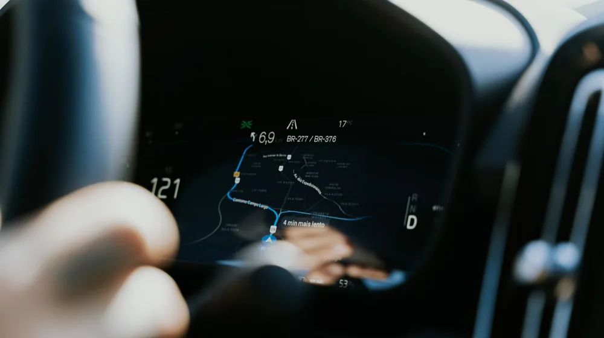

자동차보험 할인 특약 5가지: 모르면 손해 보는 보험료 절약 꿀팁
사진: Axel Sandoval / Pexels (무료 이미지, 출처 표기)
자동차보험 할인 특약, 왜 필수로 챙겨야 할까?

매년 갱신해야 하는 자동차보험료는 운전자에게 큰 고정 비용 중 하나입니다. 많은 운전자가 기본 보장 설계에만 신경 쓰지만, 실제로 보험료를 크게 낮추는 핵심은 '할인 특약'에 있습니다. 손해보험업계 자료에 따르면, 특약만 잘 활용해도 총 보험료의 30%에서 많게는 60%까지 절약할 수 있습니다.
할인 특약은 보험사 입장에서 사고 확률이 낮은 운전자에게 혜택을 주는 제도입니다. 내가 안전하게 운전하고 있다는 사실을 증명하기만 하면 보험료를 돌려받거나 깎아줍니다. 지금부터 어떤 특약이 있고, 나에게 맞는 조건은 무엇인지 구체적으로 살펴보겠습니다.
가장 효과가 큰 대표 할인 특약 5가지 비교
보험사마다 명칭은 조금씩 다르지만, 대부분 공통으로 운영하는 필수 특약들이 있습니다. 가입 전에 아래 표를 통해 주요 특약의 할인율과 대상 조건을 먼저 비교해 보세요.
* 위 할인율은 보험사별, 계약 조건별로 상이할 수 있으므로 구체적인 내용은 개별 보험사 조회를 권장합니다.
나에게 맞는 이색 할인 특약 찾아보기
비교적 최근에 도입되어 운전자들이 놓치기 쉬운 유용한 특약들도 있습니다. 대표적으로 '커넥티드카 할인'이 있습니다. 현대자동차의 블루링크나 기아의 커넥트 서비스를 이용 중이라면, 차량 자체 장치에서 수집한 안전운전 점수를 바탕으로 추가 할인을 받을 수 있습니다.
대중교통을 자주 이용하는 출퇴근 운전자라면 '대중교통 이용 특약'을 주목해야 합니다. 최근 3개월간 대중교통 이용 금액이 일정 기준(예: 6만 원 또는 12만 원)을 넘으면 보험료를 추가로 깎아줍니다. 주말에만 주로 운전하는 주말 운전자에게 매우 유리한 항목입니다.
또한, 과거 3년간 무사고 경력을 유지했다면 별도의 신청 없이도 '무사고 할인'이 자동으로 적용됩니다. 무사고 연수가 쌓일수록 할인 폭이 커지므로 평소 방어 운전을 생활화하는 것이 최고의 보험료 절약법입니다.
특약 가입 시 반드시 알아야 할 주의사항
첫째, 마일리지 특약은 가입 시점과 만기 시점에 반드시 차량 계기판 사진을 업로드해야 합니다. 사진 제출 기한을 놓치면 주행거리를 아무리 적게 탔더라도 환급을 받지 못하므로 알림 설정을 해두는 것이 좋습니다.
둘째, 블랙박스나 첨단안전장치 특약에 가입했다면 해당 장치가 항상 정상 작동하고 있어야 합니다. 고장 난 상태로 방치했다가 사고가 발생하면 할인받았던 보험료를 환수당하거나 보상 과정에서 예상치 못한 불이익을 받을 수 있습니다.
셋째, 대부분의 할인 특약은 중복 적용이 가능하지만 일부 특약은 상호 배타적일 수 있습니다. 예를 들어, 동일한 안전운전 점수라도 T맵 특약과 커넥티드카 안전운전 특약을 동시에 중복 적용해 주지 않는 보험사도 있으니 사전에 약관을 확인해야 합니다.
성공적인 특약 가입을 위한 체크리스트
- 주행거리 확인: 내 연간 평균 주행거리를 파악하고 마일리지 특약 구간 설정하기
- 내비게이션 점수 관리: 평소 T맵이나 카카오내비를 켜고 급가속, 급감속을 줄여 점수 확보하기
- 증빙 사진 준비: 가입 당일 차량 번호판과 계기판, 블랙박스 장착 내부 사진 미리 촬영해두기
- 가족 범위 최적화: 운전자 범위를 '가족 한정'이나 '부부 한정' 등으로 좁혀 기본 보험료 자체를 낮추기
금융감독원(FSS) 금융소비자 정보포털 '파인'을 활용하면 여러 보험사의 특약 조건과 할인율을 한눈에 쉽게 비교할 수 있습니다. 매년 변동되는 규정이 있을 수 있으므로, 계약 갱신 전에 공식 웹사이트를 통해 최신 기준을 확인하는 습관이 중요합니다.
🔗 이 글도 함께 보면 좋아요: 중도상환수수료 계산법, 3분 만에 아끼는 꿀팁
관련 추천 상품
이 포스팅은 쿠팡 파트너스 활동의 일환으로, 이에 따른 일정액의 수수료를 제공받습니다.
자주 묻는 질문(FAQ) (탭하면 펼쳐져요)
Q1. 마일리지 특약은 주행거리를 초과하면 페널티가 있나요?
A. 아닙니다. 약정된 주행거리를 초과하더라도 별도의 벌금이나 불이익은 전혀 없으며, 단순히 해당 주행거리 구간에 따른 보험료 환급 혜택을 받지 못할 뿐입니다.
Q2. 여러 할인 특약을 중복해서 적용받을 수 있나요?
A. 네, 대부분의 할인 특약은 중복 적용이 가능합니다. 예를 들어 블랙박스 할인, 자녀 할인, 마일리지 할인을 동시에 모두 적용받아 보험료를 크게 낮출 수 있습니다.
Q3. 블랙박스 특약 할인을 받으려면 어떤 서류가 필요한가요?
A. 특별한 서류 대신 차량에 장착된 블랙박스의 전면 사진(장착 상태를 확인할 수 있는 차량 내부 사진)과 차량 번호판 사진을 촬영하여 보험사 앱이나 웹사이트에 등록하면 됩니다.
한눈에 보는 상품 목록
파인뷰 2채널 블랙박스
선명한 화질과 고성능 센서로 야간에도 깨끗한 녹화가 가능해 보험사 제출용 및 사고 증명용으로 최적화된 블랙박스입니다.
아이나비 전후방 FHD 블랙박스
안정적인 녹화 기술과 커넥티드 기능을 지원하여 주차 중 충격 감지 및 차량 관리가 편리한 대중적인 모델입니다.